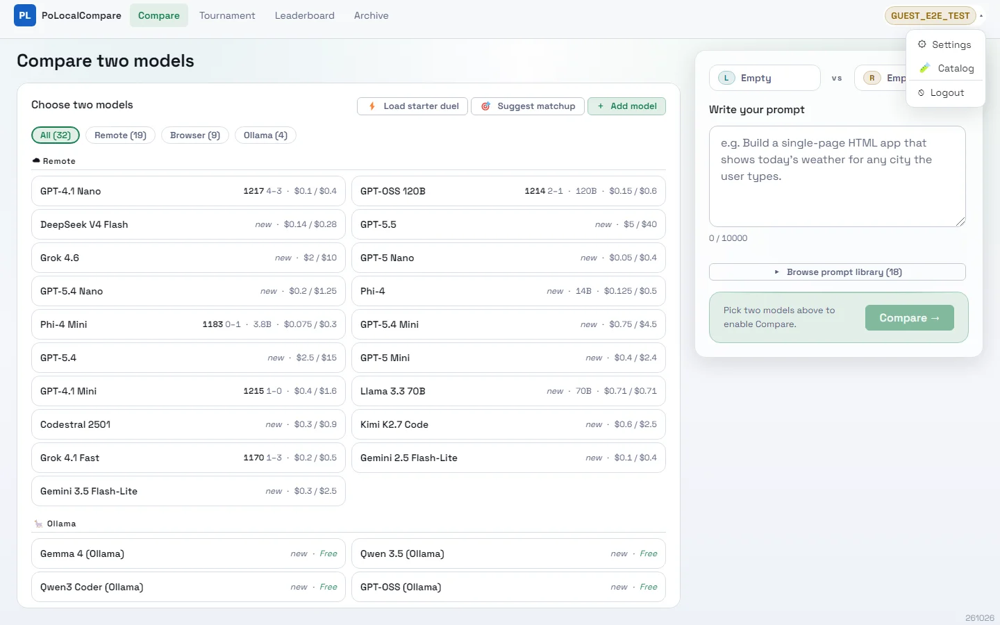
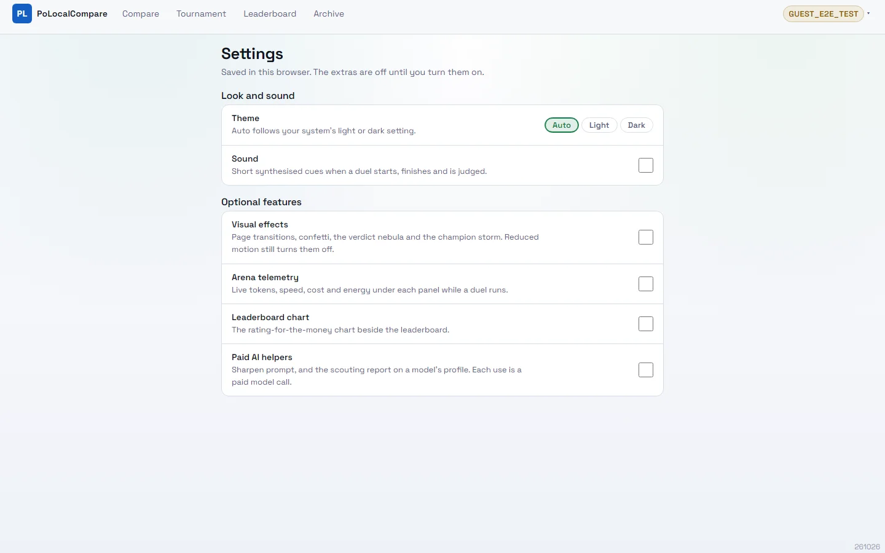
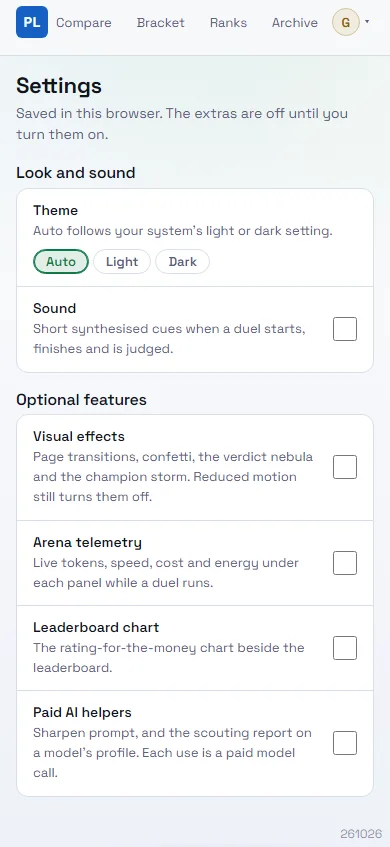
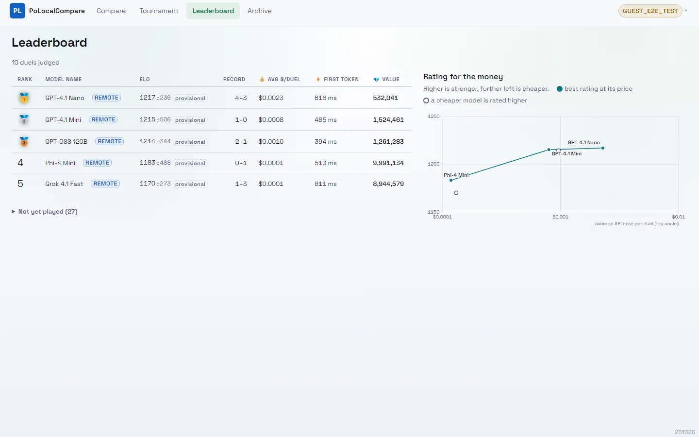
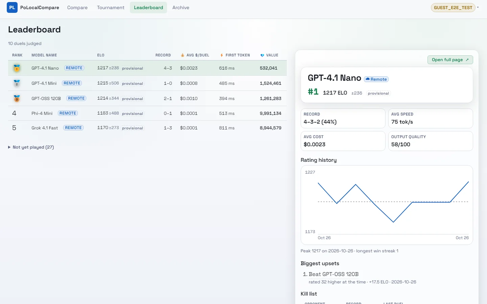
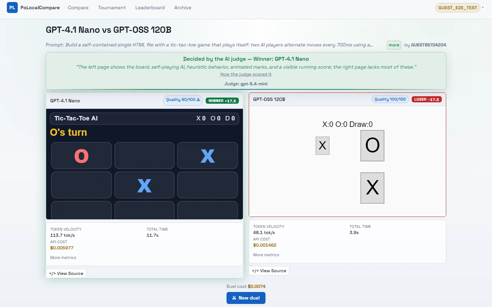
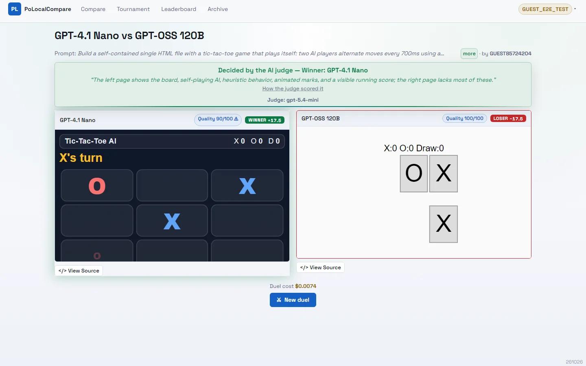

2026-10-26. Captured with Playwright Chromium (headless) against the local app, light theme, reduced motion,
signed in as the dev guest, 1440×900 unless marked. "Before" is commit 2b03a3d run from a worktree; "after" is
the working tree, with nothing switched on in Settings — what a first visit gets.
The menu carried Theme (a three-state cycle) and Sound. Sharpen prompt, a paid call, sat in the main
flow.After

The menu is Settings, Catalog, Logout. Suggest matchup stays — it is free and picks the duel that
settles ratings fastest. The prompt box goes straight to the library. Signed out, the gear is a plain link to /settings.
The Settings page (new)
After

/settings, 45rem wide. Theme is three chips (Auto, Light, Dark) instead of a cycle you had to click
through. Each row is the <label> for its checkbox, so the whole row is the target. Everything starts
off; the list is Preferences.All, so a new extra registers in one place.After · 390

Full page on a 390px phone. The theme chips wrap under their label; the checkboxes stay at the
right edge.
Leaderboard
Before

The value-for-money scatter in the right column.After

No chart. From 1024px the right column takes the page's existing no-chart fallback — the
leader's profile. The ± stays on every row: how settled a rating is, is what the board is for.
Arena
Before

A telemetry block under each panel.After

The two outputs, the verdict and the duel's total cost. The page is 136px shorter. (The right
preview differs because the page is a live, self-playing game.)
Also in this change: the screenshots on every page in this folder were re-encoded from PNG to WebP
(13.3 MB → 2.7 MB, C8).